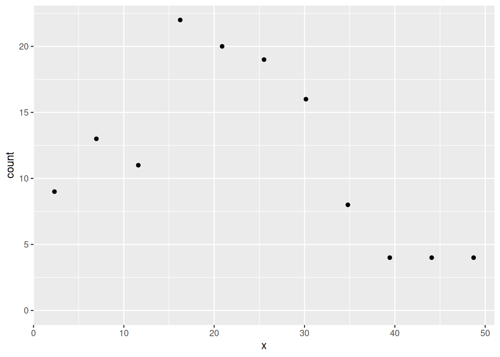
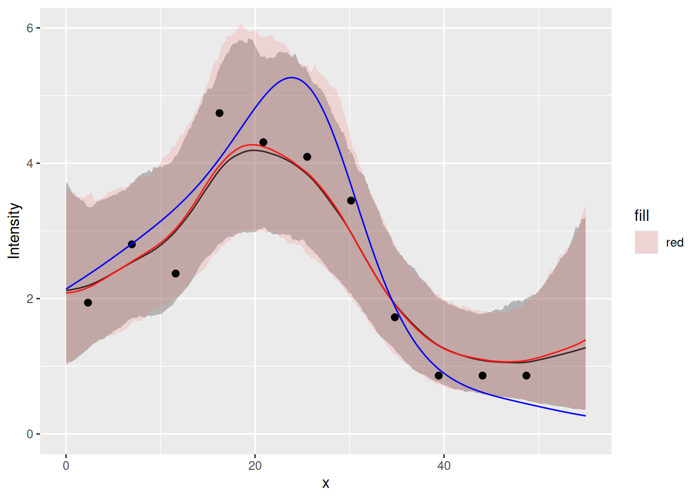
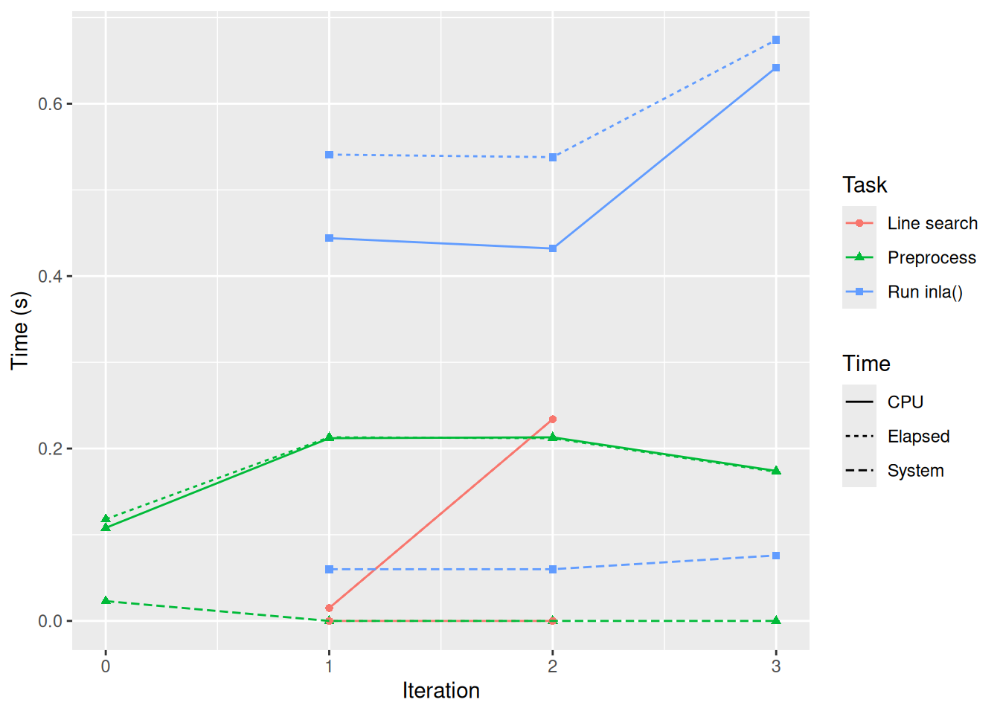
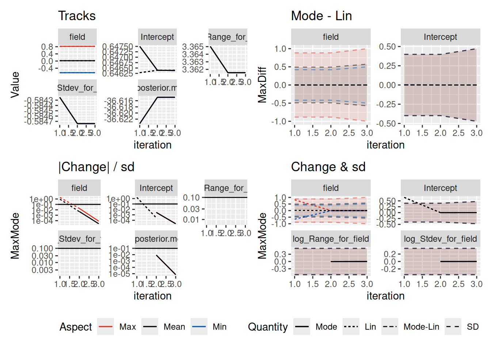

Aggregated count models in one dimension
Finn Lindgren
Generated on 2025-05-19
Source:vignettes/aggregated_counts_1d.Rmd
aggregated_counts_1d.RmdThis tutorial modifies the 1D random fields tutorial to properly handle aggregated counts.
Setting things up
Make a shortcut to a nicer colour scale:
colsc <- function(...) {
scale_fill_gradientn(
colours = rev(RColorBrewer::brewer.pal(11, "RdYlBu")),
limits = range(..., na.rm = TRUE)
)
}Get the data
Load the data and rename the countdata object to cd
(just because ‘cd’ is less to type than
‘countdata2’.):
data(Poisson2_1D)
cd <- countdata2Take a look at the count data.
cd
#> x count exposure
#> 1 2.319888 9 4.639776
#> 2 6.959664 13 4.639776
#> 3 11.599439 11 4.639776
#> 4 16.239215 22 4.639776
#> 5 20.878991 20 4.639776
#> 6 25.518766 19 4.639776
#> 7 30.158542 16 4.639776
#> 8 34.798318 8 4.639776
#> 9 39.438093 4 4.639776
#> 10 44.077869 4 4.639776
#> 11 48.717645 4 4.639776
ggplot(cd) +
geom_point(aes(x, y = count)) +
ylim(0, max(cd$count))
Tip:
RStudio > Help > Cheatsheets > Data visualisation with ggplot2
is a useful reference for ggplot2 syntax.
Fitting an SPDE model with inlabru
Make mesh. To avoid boundary effects in the region of interest, let the mesh extend outside the data range.
x <- seq(-10, 65, by = 0.5) # this sets mesh points - try others if you like
(mesh1D <- fm_mesh_1d(x, degree = 2, boundary = "free"))
#> fm_mesh_1d object:
#> Manifold: R1
#> #{knots}: 151
#> Interval: (-10, 65)
#> Boundary: (free, free)
#> B-spline degree: 2
#> Basis d.o.f.: 152Using function bru( ) to fit to aggregated count
data
We need to specify model components and a model formula in order to
fit it. This can be done inside the call to bru( ) but that
is a bit messy, so we’ll store it in comp first and then
pass that to bru( ).
Our response variable in the data frame cd is called
count so the model specification needs to have that on the
left of the ~. We add an intercept component with
+ Intercept(1) on the right hand side (all the models we
use have intercepts), and because we want to fit a Gaussian random field
(GRF), it must have a GRF specification. In inlabru the GRF
specification is a function, which allows the GRF to be calculated at
any point in space while inlabru is doing its
calculations.
The user gets to name the GRF function. The syntax is
myname(input, model= ...), where:
- ‘myname’ is whatever you want to call the GRF (we called it
fieldbelow); -
inputspecifies the coordinates in which the GRF or SPDE ‘lives’. Here we are working in one dimension, and we called that dimensionxwhen we set up the data set. -
model=designates the type of effect, here an SPDE model object from theINLAfunctioninla.spde2.pcmatern( ), which requires a mesh to be passed to it, so we pass it the 1D mesh that we created above,mesh1D.
For models that only sums all the model components, we don’t need to
specify the full predictor formula. Instead, we can provide the name of
the output to the left of the ~ in the component
specification, and “.” on the right hand side, which will cause it to
add all components (unless a subset is selected via the
used argument to bru_obs()).
the_spde <- inla.spde2.pcmatern(mesh1D,
prior.range = c(1, 0.01),
prior.sigma = c(1, 0.01)
)
comp <- ~ field(x, model = the_spde) + Intercept(1, prec.linear = 1 / 2^2)Approximate model pretending that the counts are measured at individual points:
fit2.bru <- bru(
comp,
bru_obs(
count ~ .,
data = cd,
family = "poisson",
E = exposure
)
)
summary(fit2.bru)
#> inlabru version: 2.12.0.9016
#> INLA version: 25.05.18-1
#> Components:
#> field: main = spde(x), group = exchangeable(1L), replicate = iid(1L), NULL
#> Intercept: main = linear(1), group = exchangeable(1L), replicate = iid(1L), NULL
#> Observation models:
#> Family: 'poisson'
#> Tag: ''
#> Data class: 'data.frame'
#> Response class: 'integer'
#> Predictor: count ~ .
#> Additive/Linear: TRUE/TRUE
#> Used components: effects[field, Intercept], latent[]
#> Time used:
#> Pre = 0.515, Running = 0.493, Post = 0.0935, Total = 1.1
#> Fixed effects:
#> mean sd 0.025quant 0.5quant 0.975quant mode kld
#> Intercept 0.626 0.479 -0.437 0.658 1.52 0.729 0
#>
#> Random effects:
#> Name Model
#> field SPDE2 model
#>
#> Model hyperparameters:
#> mean sd 0.025quant 0.5quant 0.975quant mode
#> Range for field 35.074 19.904 10.922 30.470 86.45 23.073
#> Stdev for field 0.594 0.221 0.275 0.557 1.13 0.488
#>
#> Deviance Information Criterion (DIC) ...............: 59.22
#> Deviance Information Criterion (DIC, saturated) ....: 13.58
#> Effective number of parameters .....................: 5.16
#>
#> Watanabe-Akaike information criterion (WAIC) ...: 57.43
#> Effective number of parameters .................: 2.63
#>
#> Marginal log-Likelihood: -36.69
#> is computed
#> Posterior summaries for the linear predictor and the fitted values are computed
#> (Posterior marginals needs also 'control.compute=list(return.marginals.predictor=TRUE)')Model that takes into account that the expected counts are integrals:
data_integration <- fm_int(
mesh1D,
samplers = with(cd, cbind(x - exposure/2, x + exposure/2))
)
if (packageVersion("inlabru") >= "2.12.0.9016") {
# From 2.12.0.9016:
fit2block.bru <- bru(
comp,
bru_obs(
count ~ .,
data = data_integration,
response_data = cd,
aggregate = "logsumexp",
family = "poisson"
)
)
} else {
# Before 2.12.0.9016:
fit2block.bru <- bru(
comp,
bru_obs(
count ~ fm_block_logsumexp_eval(
block = .block,
weights = weight,
n_block = NROW(cd),
values = Intercept + field
),
allow_combine = TRUE,
data = data_integration,
response_data = cd,
family = "poisson"
)
)
}
summary(fit2block.bru)
#> inlabru version: 2.12.0.9016
#> INLA version: 25.05.18-1
#> Components:
#> field: main = spde(x), group = exchangeable(1L), replicate = iid(1L), NULL
#> Intercept: main = linear(1), group = exchangeable(1L), replicate = iid(1L), NULL
#> Observation models:
#> Family: 'poisson'
#> Tag: ''
#> Data class: 'tbl_df', 'tbl', 'data.frame'
#> Response class: 'integer'
#> Predictor: count ~ .
#> Additive/Linear: FALSE/FALSE
#> Used components: effects[field, Intercept], latent[]
#> Time used:
#> Pre = 0.358, Running = 0.48, Post = 0.0822, Total = 0.92
#> Fixed effects:
#> mean sd 0.025quant 0.5quant 0.975quant mode kld
#> Intercept 0.627 0.472 -0.419 0.659 1.508 0.729 0
#>
#> Random effects:
#> Name Model
#> field SPDE2 model
#>
#> Model hyperparameters:
#> mean sd 0.025quant 0.5quant 0.975quant mode
#> Range for field 33.590 19.718 9.978 28.954 84.61 21.549
#> Stdev for field 0.595 0.218 0.279 0.559 1.12 0.492
#>
#> Deviance Information Criterion (DIC) ...............: 59.01
#> Deviance Information Criterion (DIC, saturated) ....: 13.37
#> Effective number of parameters .....................: 5.01
#>
#> Watanabe-Akaike information criterion (WAIC) ...: 57.28
#> Effective number of parameters .................: 2.57
#>
#> Marginal log-Likelihood: -36.58
#> is computed
#> Posterior summaries for the linear predictor and the fitted values are computed
#> (Posterior marginals needs also 'control.compute=list(return.marginals.predictor=TRUE)')Predict the lambda function (the data argument must be a
data frame, see ?predict.bru):
x4pred <- data.frame(x = seq(0, 55, by = 0.1))
pred2.bru <- predict(fit2.bru,
x4pred,
x ~ exp(field + Intercept),
n.samples = 1000
)
pred2block.bru <- predict(fit2block.bru,
x4pred,
x ~ exp(field + Intercept),
n.samples = 1000
)Let’s do a plot to compare the fitted model to the true model. The
true lambda is given by the function
lambda2_1D(), and the expected counts of the true model are
stored in the variable E_nc2 which comes with the dataset
Poisson2_1D. For ease of use in plotting with
ggplot2 (which needs a data frame), we create a data frame
which we call true.lambda, containing x- and
y variables as shown below.
true.lambda <- data.frame(x = x4pred$x, lambda = lambda2_1D(x4pred$x))These ggplot2 commands should generate the plot shown
below. It shows the true intensities as a blue line, the observed
intensities as black dots, and the fitted intensity function as a red
curve, with 95% credible intervals shown as a light bands about the
curves.
ggplot() +
gg(pred2.bru) +
gg(pred2block.bru,mapping = aes(fill="red"), alpha=0.2, color = "red") +
geom_point(data = cd, aes(x = x, y = count / exposure), cex = 2) +
geom_line(data = true.lambda, aes(x, lambda), col = "blue") +
coord_cartesian(xlim = c(0, 55), ylim = c(0, 6)) +
xlab("x") +
ylab("Intensity")
#> Warning in ggplot2::geom_line(data = data, line.map, ...): Ignoring
#> unknown aesthetics: fill
We can see that for this toy problem, using the proper aggregated count observation model doesn’t make a noticeable difference to the fitted model. For more realistic settings, in particular those involving high resolution covariates, the distinction becomes important, and the the integration scheme to resolve small features.
The computational time is available from
bru_timings():
bru_timings(fit2.bru)
#> Task Iteration Time System Elapsed
#> 1 Preprocess 0 0.414 secs 0.028 secs 0.429 secs
#> 2 Preprocess 1 0.111 secs 0.016 secs 0.118 secs
#> 3 Run inla() 1 0.994 secs 0.168 secs 1.134 secs
bru_timings(fit2block.bru)
#> Task Iteration Time System Elapsed
#> 1 Preprocess 0 0.115 secs 0.029 secs 0.132 secs
#> 2 Preprocess 1 0.212 secs 0.000 secs 0.212 secs
#> 3 Run inla() 1 0.709 secs 0.076 secs 0.808 secs
#> 4 Line search 1 0.014 secs 0.000 secs 0.014 secs
#> 5 Preprocess 2 0.214 secs 0.000 secs 0.215 secs
#> 6 Run inla() 2 0.690 secs 0.052 secs 0.799 secs
#> 7 Line search 2 0.244 secs 0.000 secs 0.244 secs
#> 8 Preprocess 3 0.174 secs 0.000 secs 0.174 secs
#> 9 Run inla() 3 0.928 secs 0.058 secs 0.945 secs
bru_timings_plot(fit2block.bru)
To check the iterative method convergence, use
bru_convergence_plot():
bru_convergence_plot(fit2block.bru)